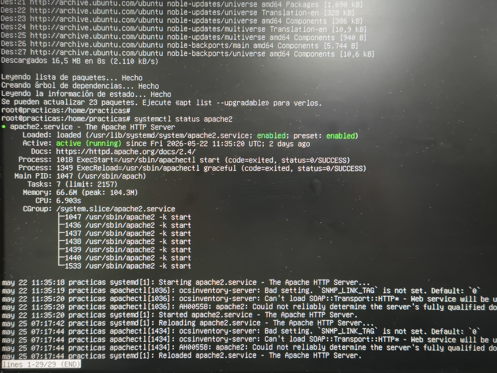
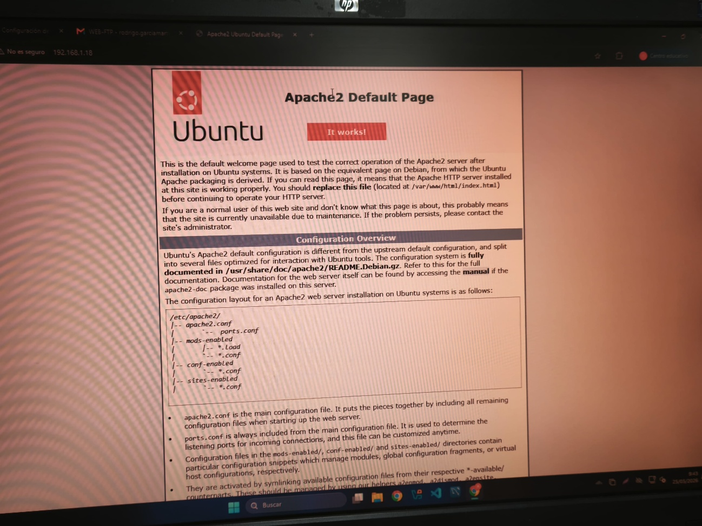
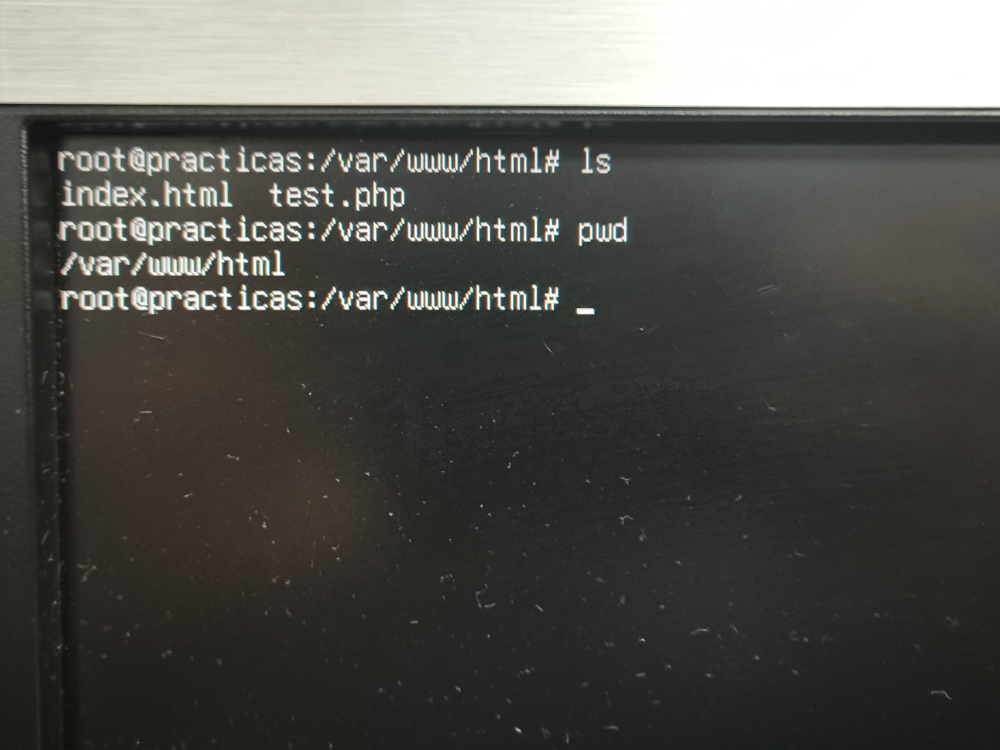
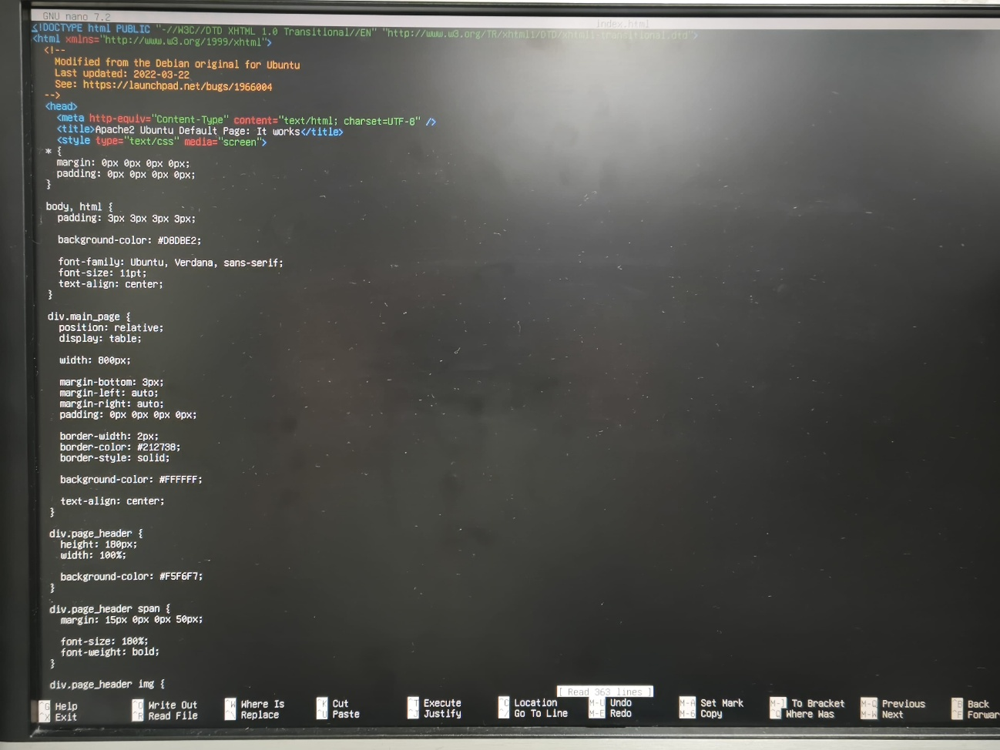
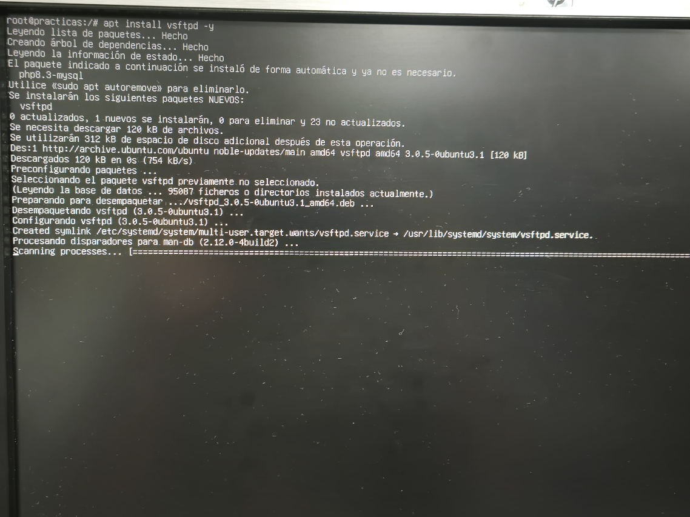
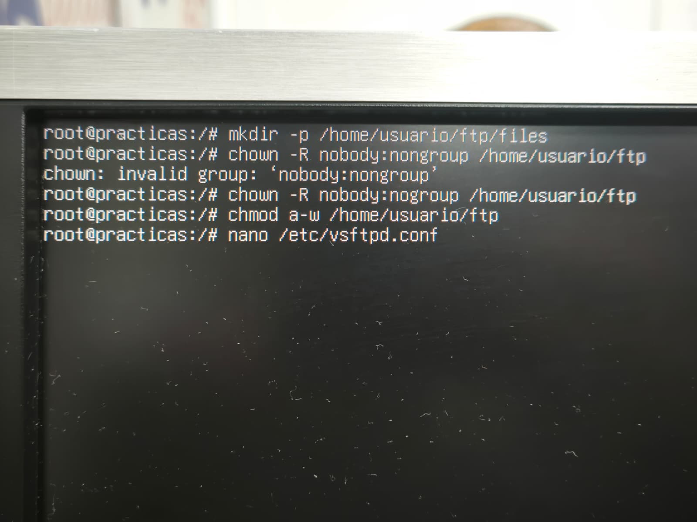
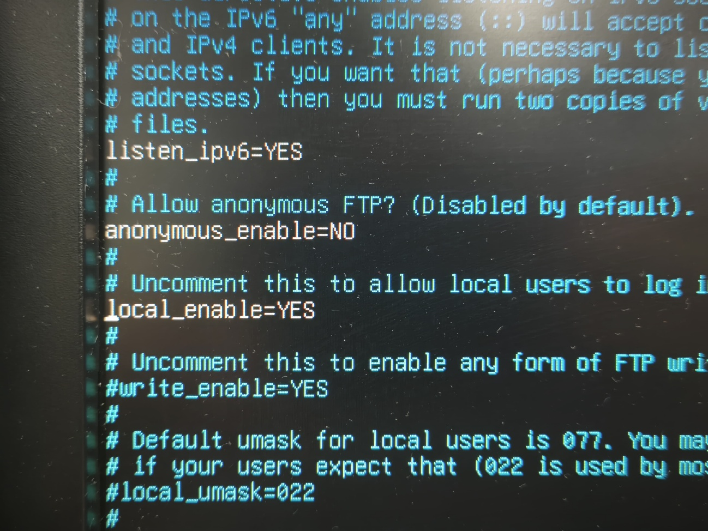
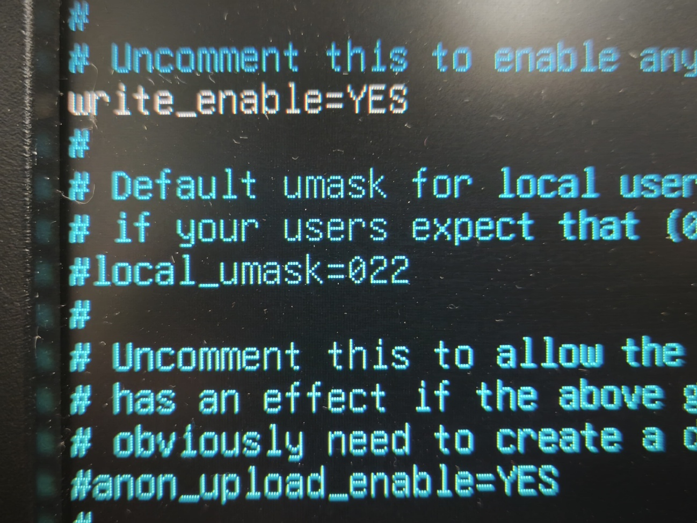
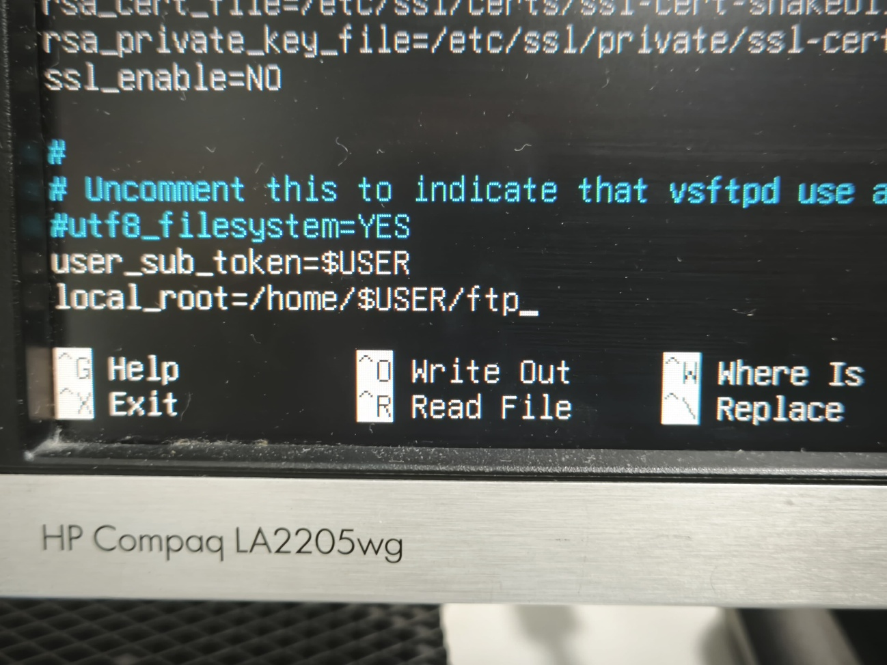
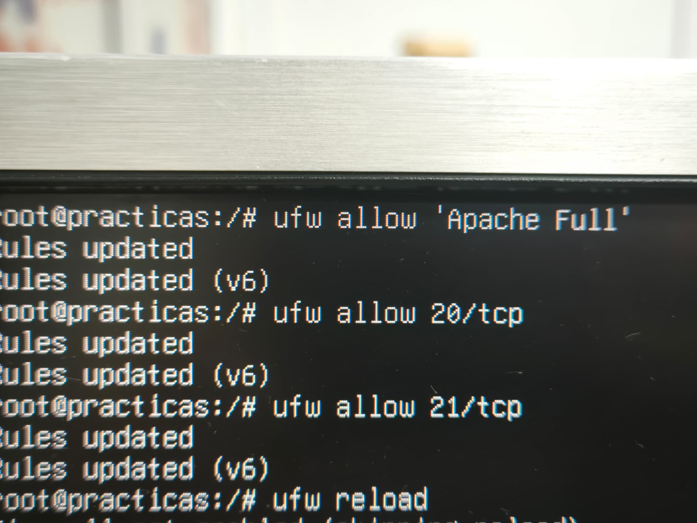

Actualizar repositorios
sudo apt update && sudo apt upgrade -y
Daniel Cantos / Bruno Ibáñez / Rodrigo García
Antes de instalar cualquier servicio, actualizamos los repositorios de nuestro servidor para asegurarnos de tener los paquetes más recientes.
Ya tenemos instalado el servicio Apache2 de la actividad anterior. A continuación se muestra cómo instalarlo, verificarlo y comprobar su funcionamiento.

Abrimos el navegador web e ingresamos la IP de nuestro servidor para verificar que Apache2 responde correctamente:

Los archivos de nuestra web se guardan en /var/www/html/. El contenido por defecto del index.html es el siguiente:

index.html por defectoInstalamos vsftpd (Very Secure FTP Daemon) para gestionar la transferencia de archivos de forma segura.
Abrimos el archivo de configuración:
Modificamos o añadimos las siguientes líneas para permitir la escritura y aislar a los usuarios:
anonymous_enable=NO — Desactiva el acceso anónimolocal_enable=YES — Permite el acceso a usuarios locales de Ubuntuwrite_enable=YES — Permite subir y modificar archivoschroot_local_user=YES — Bloquea a los usuarios en su carpeta de inicio por seguridad
vsftpd.confPor seguridad, vsftpd no permite iniciar sesión si la carpeta raíz del usuario tiene permisos de escritura compartidos. Ejecutamos los siguientes comandos:
Añadimos al final de /etc/vsftpd.conf:

user_sub_token y local_root en vsftpd.conf
Abrimos los puertos necesarios para que tanto el servidor web como el FTP sean accesibles desde la red.



